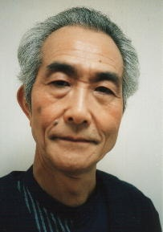

|  |
Eiji Maruyama is a voice actor from Anime and Super Sentai. His most notable Sentai contributions was in Kyoryu Sentai Zyuranger as Tryannosaurs. He voiced Cao Fu Shen in Fighting Beauty Wulong and Wiseman in Sailor Moon R.
|
|---|
| |
Pop Pop | Pokemon Advanced Generations | Pop Pop is Jame's grandfather who takes care of one of his family's vacation cottages. He and his wife take cares of sick and injured Pokemon in the manision's greenhouse and garden. |
Go Back to Main Page |
Go Back to Homepage |
|
|
|
OR |
|